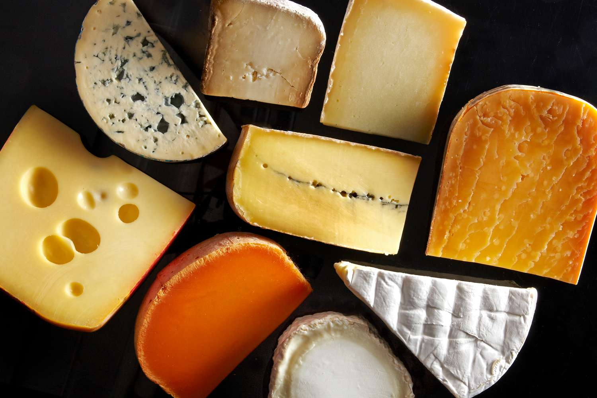

"Cheese is a dairy product derived from milk, and it has been a staple in many cultures around the world
for thousands of years. The process of cheese-making involves coagulating milk to separate curds (solid)
from whey (liquid), followed by various methods of aging and flavoring. There are numerous types of cheese,
each with unique flavors, textures, and uses. In this overview, we will focus on four popular varieties: Swiss,
cheddar, mozzarella, and American cheese.

Culinary Ingredient
Cheese is widely used as an ingredient in cooking and baking. It can enhance the flavor and texture of
numerous dishes, including:
Pasta Dishes: Cheese varieties like Parmesan, mozzarella, and ricotta are commonly used in pasta
recipes such as lasagna, macaroni and cheese, and stuffed shells.
Pizza: Mozzarella cheese is a staple topping for pizza, providing that classic gooey texture and
rich flavor.
Sauces: Cheese can be melted into sauces to create creamy textures for dishes like Alfredo sauce or
cheese dips.